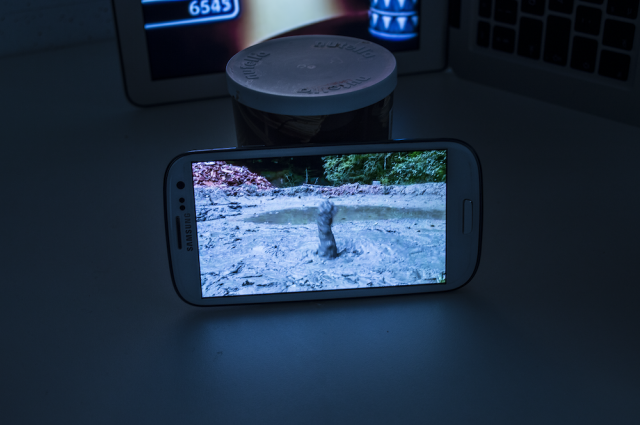
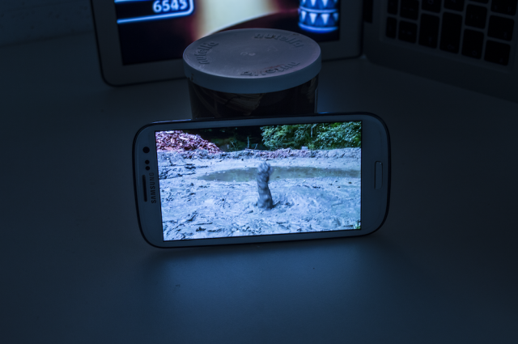
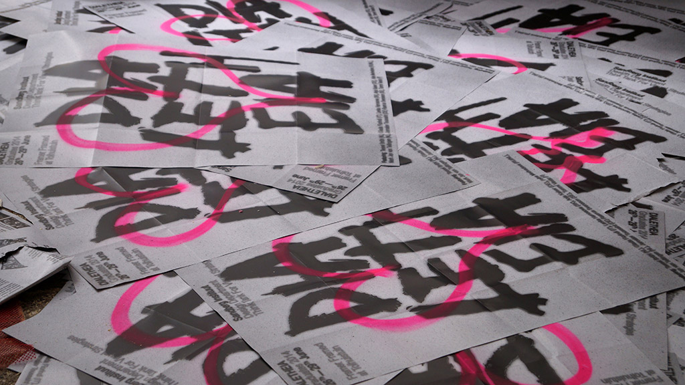

| Description | Media | |
|---|---|---|
Why is it so difficult to find a place to live in big cities like Paris, London or Amsterdam? Why are the prices so high? How is it possible that with so many empty places, so many people have no place to live? Isn’t it absurd to struggle that much paying a fortune to live in ridiculously small apartments! Why do we keep on doing that? We live like it’s a fatality, thinking that we are free to choose while we keep on achieving what the course of society and history imposes. Thus we are all stuck in the smallest spaces and keep on consuming mechanically. “Do we want the society that we live in? Do we want something else? Do we want a society at all? The answer is probably in our actions, or in our lack of actions.“ 1 If you don’t agree, if I don’t agree with what we are living, how should we protest or resist? What is protesting anyway? What is resisting? Demonstrations? How efficient is that nowadays? How could we resist and protest as an everyday-life action? Some people have found solutions to those issues in alternative ways of living : squats, urban farms, treehouses… But we are still very far from a radical change in our societies. Some say that you wear what you are, that clothes are a mirror to the soul : they show our beliefs, affiliations, interests, what we stand for, what we claim. The Shelter is an object designed to claim back our freedom and autonomy. This poncho can be turned into a tent. Carrying your house on your back, like a snail you are slow, but so is social change. Let’s explore, let’s invade our common earth : your home is everywhere you can pitch your tent, aren’t we all citizens of the world after all? “Each person is free to create for his/her life the direction and meaning that he/she wants and can.”2 Let’s break borders and build our own freedom. |
 



|
|
| Tags | Film, audio, photography | |
| Title | Year | Excerpt | Media |
|---|---|---|---|
| Digital detox bath | 2015 | tal detox bath” is an installation about a different approach to what material means. we reinvent what material means by our intercation with virtuality. we experience things on the screen more vividly than if we would experience them otherwise. with this installation i wanted to translate this interaction with digital materiality. i have created sort of organic environment that lets you experience the material, the texture by looking at the screen. |



|